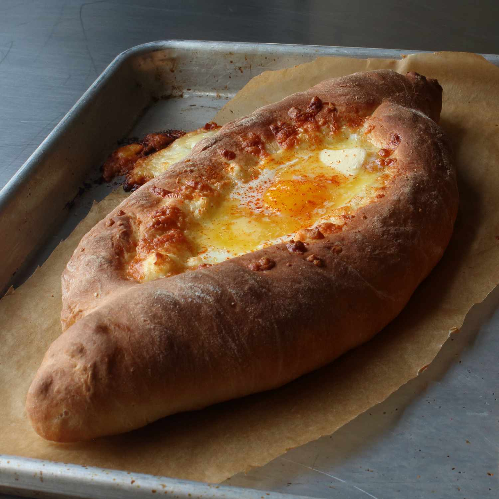

Khachapuri

Description:
Khachapuri is traditional georgian dish that is made with cheese and bread and has many varieties from different regions of georgia.
- 300 g All-purpose flour
- 150 ml Water (warm)
- 10 g Dry yeast
- 500 g Cheese, grated
- 2 Egg yolks
- 20 g Butter
- 1 tsp Sunflower oil, for greasing
- 1 tsp Salt
Steps:
- In a bowl combine warm (not hot) water and dry yeast, stir well and set aside for about 15 minutes.
- Add the flour little by little and start to knead the dough.
- Continue to knead on the flowered board until the dough is soft.
- Put the dough in a bowl, sprinkle with sunflower oil, cover with plastic wrap and let rest for about 40 minutes.
- Preheat the oven on 220 C°. Divide the dough into 2 balls.
- Roll out each dough ball in an oval shape. Seal the longer sides together so that the dough takes a boat shape.
- Fill each boat with cheese. If the dough ball is 200 g, cheese filling must be 200 g too.
- Bake the khachapuri in the preheated oven, about 12-15 minutes, until golden.
- Then take it out, place the egg yolk in the center and continue to bake for another 1-2 minutes. Add butter before serving.